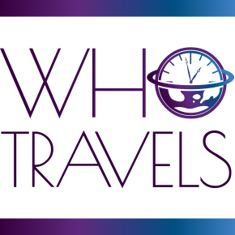

Portfolio
Who Travels: Who Travels inspired travel agency
When taking classes for my continued education certificate in web design through Loyola, our final project was to create a company website in groups. Since this could be anything, we decided to have fun with it and create a travel agency based off of the popular tv show Who Travels. Having prior design experience, I took control of the page design layouts using Figma and worked together with my teammates on the coding. This was my first large scale webdesign project, and my first time working with a team on Github. We used HTML, CSS, and Javascript to help bring the pages to life, as well as to ensure our webpages were using responsive and accessible design.
You can acess the full site here.
